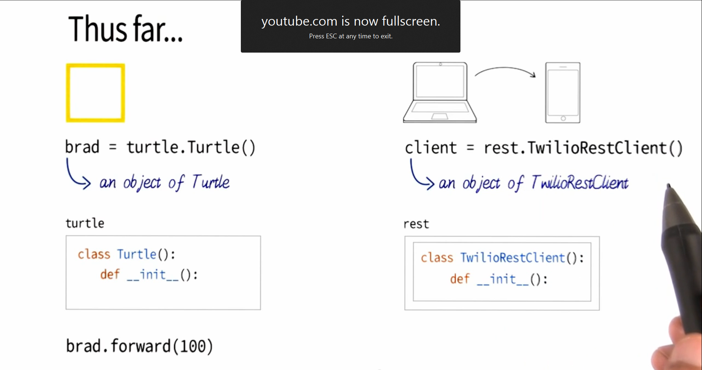

Browser - Reads and displays HTML
The Net - Provides connectivity
Servers - Computers that store and send copies of HTML documents
Transfer Protocol - The transmission method for requesting, retrieving, sending, and receiving the HTML files
Hypertext Markup Language
HTML is the backbone of the web, which is really just billions of HTML documents. The tags open and close with the Greater than and Less than characters. They have names, and attributes. The closing tag is the same as the opening, except it uses the slash switch inside the tag, right in front of the name.Void tags don't need a closing tag. Some tags have multiple attributes at the same time.
Inline Tags
Anchor - Adds links to other parts of the page or to external sites.
Break - Like a return character, just forces whatever comes after it to the next line.
Image - A graphic, like a .png or a .jpg file.
Span - Sets of text but adds the ability to include classes or other selectors to the middle of that line of text.
Block Tags
Paragraph - Creates an invisible box
Div - Also creates an invisible box
Whitespace
It doesn't matter how much whitespace you add when edting HTML, you cannot use the Return key or space bar to add whitespace to the HTML document just by typing it into the HTML. It always reads as just one space.
Don't use HTML to give whitespace on the page. Instead use styling to do so.
Accronyms:
HTML provides structure, the way blueprints define the structure of a building.
CSS provides styling, the way interior design provides styling in the building.
JS provides functionality and interactivity, similarly to plumbing, electrical, HVAC, etc.
HTML uses a logical tree for structuring.
It works from the top-down in parent / child relationships.
CSS and Styling
CSS addresses only the styling.
The same styling will work on multiple structures, or you can have multiple styles for the same structure.
The styling is independent of the HTML, so the CSS can be changed out at will.
The document object model is a set of rules for what the browser will do when it encounters HTML.
The browser builds the DOM tree from the HTML.
Every element (tag) in HTML is part of the tree (similar to leaves on a tree, parts of a tree, etc?).
Elements:
class="content_text"Everything's a box. Boxes within boxes, like Inception.
Rectangles make changes easier.
Cascading refers to hierarchical structure, and which style will ultimately be applied if more than one are defined.
Inheritance refers to nested elements, where elments deeper in the nest automatically get attributes assigned to them from elements higher in the nest.
Selectors are a way to "select" which elements on the page will receive the defined styling. syntax is: Selector {Attribute(s): value(s);}
The Accronym DYR is a tongue-in-cheek reference to "Don't Repeat Yourself."
Keep the design as simple as possible and make use of cascading attributes, to limit the number of changes you have to make in the code. You only want a single source for any part of your code..
Repetitive code is complicated code.
Computers are hardware that can be used for multiple purposes and the way to do different things is to write sequences of steps called programs. The computer can execute these different programs, and each program is written in different languages. The idea of a computer program is an abstracted concept that can refer to different types of things.
Examples of different types of programs:
We will use an interpreted language called Python.
An interepreted language is one in which the processor "runs" the code as it is encountered. This is a little different from a compiled language in which a program is "compiled" ahead of time by a compiler. The compiler is a computer program that "translates" a code written by the programmer into a far more basic code that is closer to the computer's natural capabilities.
The first part of this stage of the course goes into the basic rules that surround computer languages, and compares computer languages to natural languages like English, Latin, Greek, Spanish, etc.
Commands
A command is an instruction that uses a convention of the programming language. The example in the tutorial is the command "Print," which is a Python command that means "return the results of the following." The programmer then follows the command with operational language that the command can execute.
Language Ambiguity
Natural languages contain ambiguous meanings that humans can interepret in several different ways, and then decide which meaning would be most applicable to the logical flow of thought in the communication. In this way we can make a pretty solid guess about what a speaker probably means, and often be correct in that guess.
Forms of Grammar Notations
Backus-Naur Form (BNF) is one example of a formal notation system for explaining the rules of a language. It can be used to describe the language rules of both natural languages and computer languages. BNF classifies the elements of a language into Non-terminal and terminal elements, and specifies where replacements can be used. It also defines the structure of an acceptable statement in the language. By placing the language elements into their proper placements as specified in the rule, sentences are formed by the author.
Computer languages need to eliminate ambiguity. Commands and other phrases in a computer language need to have one and only one meaning. Computers are not sophisticated enough to take guesses at what programmers intend, or hope the results will be.
In Python an acceptable statement is refered to as an expression.
A function (also called a procedure) is a way of taking input information, transforming it, and putting out the transformed result.
The structure for a function uses the form that follows here if.
def <name of the function>(<input 1><input 2>...<input n>):
<block of code>
return (<output 1><output 2>...<output n>)
The DEFINE statement
The structure for a function uses the keyword def, meaning define. This is a way of defining a statement, or declaring to the interpreter that a function is being created and defined.
The RETURN statement
Once the block of code within a function has been executed, the result of the function must be returned to the program that originally called, or directed the execution of, the function. To do this a command is issued that used the keyword return. The return statement specifies whatever outputs the function was created to produce.
A variable is a holding place for some data that you want to use or access. It is like a bank account, which is a holding place for money that you want to access later. The money in the account is the value, and the bank account itself is like the variable.
A string is a type of data that contains a series of little characters or values.
The computer can make decisions, and only perform coded instructions if certain conditions are met.
Comparisons
The computer can compare two things and determine whether one is greater than the other, or whether the two are equal or inequal. The types of things you compare makes a difference. If you compare two integer numbers then it is a sensible comparison to figure out which is greater, less, equal, etc. Similarly with two mathematical expressions. However comparing two different types of items, such as comparing an integer to a string, will give different results in different situations. The language surely has a set of rules for doing this, but it doesn't get covered in this level of the class.
The IF statement
The structure for a conditional test uses the keyword if.
if<condition test>:
<block of code>
If the condition is met then the code contained in the block of code would be executed. If the condition is not met then the code would not be executed.
The ELSE statement
The structure for an else statement continues as an extension of the if statement..
if<condition test>:
<block of code>
<else>:
<block of alternative code>
You can optionally add an else statement, with the same formatting, to the end of the if, and in the else contain code that will execute if the condition in the if statement is not met.
The OR statement
The condition test can contain an or statement. With the or statement, you list more than one condition and if any one of the listed conditions are met, then the code is executed.
The BREAK statement
The block of code executed by a conditional test can contain a break statement. With the break statement, the block of code stops being executed, even if the condition for executing the code is still true and the code would otherwise be executed again. This can get kludgy, the place I see the break statement used most often is in troubleshooting and debugging.
A loop is a construct that allows the computer to do something over and over again until the task has been repeated enough times that we don't need it peformed again. This is different from an if statement because the if statement executes only once (if at all). Loops can execute zero times, one time, or more than one time.
We'll talk about two kinds of loops:
The WHILE Loop
While Loops allow the computer to continue to exectue coded instructions while a condition happens to be true. Once the condition is no longer true, the computer drops out of the loop and continues onward with whatever code comes afterwward.
The structure for While loop uses the keyword while.
while <condition test>:
<block of code>
The For Loop
Note:For loops are introduced later in the course, after Append, +, and len. But I'm putting my notes for it here because it's a type of loop and I want them consolidated in my notes.
For loops allow the computer to continue to exectue coded instructions for every time a condition happens to be true. Once the condition is no longer true, the computer drops out of the loop and continues onward with whatever code comes afterwward.
The structure for While loop uses the keyword while.
for <name of a variable> in <list>:
<block of code>
Syntax Example:
def my_function(my_list):
my_variable = 1
for item in my_list:
my_variable = my_variable * item
return my_variable
Debugging refers to finding and removing errors in the program. Developing a system for doing this is key to successful programming.
The Traceback Statement
As a strategy, review the error messages the code gives you. Tracebacks are error messages that give the programmer an idea of where the program stopped working in its execution. It also gives an error type. The message that shows the error type can then be used in searches to find solutions.
The Comment
As a strategy, limit the amount of code you need to focus on to find the error. Using comments in your code can temporarily extract troublesome sections of code as a way of locating exactly where the error is. Use the # to create a comment line so that the interpreter ignores that line of code in your program. "Comment off" sections of suspected buggy code until you "trap the bug."
Borrowed or Sample Code
As a strategy, let others guide your way. Use code provided by other coders in your own. They've already done a lot of wor. Just ensure that their code works as you intend for it to, and ensure that it does what they say it will do.
The Print Statement
As a strategy, find the spots where the code isn't performing as you expect. Using the print statement is a way of manually creating a trace within your program. Tracing a program is a way of finding out which lines of code work ok, and exactly where the code breaks. So if line 100 works fine, and line 102 has a problem in it, then print statements on either side of line 102 can help you locate the trouble.
Version Control
As a strategy, compare newer versions of code to older versions known to work as intended. Save your code, and refer to older versions of it later. Comparing newer code to older code is a good way of falling back to known good versions of code if you get out too far onto a limb.
We've been using strings in the past, which is one example of a structure of data. The next one to look at is the list.
Lists
A list is similar to a string, in that it contains a series of different elements. However it is a little different in that it can contain more than just characters.
Lists can contain:
The syntax for creating a list uses the square brackets symbols [ ].
Elements inside the square brackets are separated by commas, and it's probably assigned to a variable.
list_name = [ <item 00>, <item 01>, ... <item n>,]
It's also possible to nest lists inside one another so that you have a list of lists. to access elements inside a nested list, use a series of references.
Syntax to access elements inside of lists:
Mutating Lists
You can change the contents of a list, or mutate the list. Access the item in the list you want to change, and use the assignment operator to reassign that element of the list to the new value you want. This action actually changes the contents of the list, which is different from a string. with a string you cannot reassign the values of the individual positions in the string, it just isn't supported. With lists, it is. The example below would change (mutate) the list to remove Larry and place Shemp in its place:
Example:
stooges = [ 'Moe', 'Larry', 'Curly']
stooges = ΐ] = 'Shemp'
Aliases
Two different references to the same object. They use the example of James Bond and 007 are both references to the same person. Whatever state the object has affects both references. So the bad guys take away the martini, then both James Bond and 007 are affected by that. Two variable names that refer to the same object, if you change the vaul of that object, then either variable is going to see the changed state.
Example:
Bond = [ 'J', 'a', 'm', 'e', 's',]
007 = Bond
Both of the two variables, Bond and 007 refer to the same object, a list of letters that make up our hero's first name. To mutate either of these is to mutate the other as well.
Appending Lists
This is a method (which is like a function that's built into the language). It will add an element onto the end of something, and we'll use to mutate a list. This does NOT create a new list, but rather mutates the existing list, giving it a new element on the end. One element you can add is another list, but when append list 02 onto list 01, list 02 gets inserted as a list, i.e. list 02 becomes a single new element within list 01.
Syntax Example:
< list 01 >.append(< element >)
stooges = [ 'Moe', 'Larry', 'Curly']
stooges.append('Shemp') --> stooges = [ 'Moe', 'Larry', 'Curly' , 'Shemp']
+
This is another method (which is like a function that's built into the language). It is similar to the method that concatenates strings. It does NOT mutate lists, just puts them together in output.
Syntax Example:
< list 01 > + < list 02 >
[ 0 , 1] + [ 2 , 3] --> This will print out [ 0 , 1, 2 , 3]
, but list 01 has not been altered in memory. So any subsequent print of list 01 will show it as it was before the + operator.Extend
This is another method (which is like a function that's built into the language). This extends the list, and adds new stuff into the new slots in the list. This is different from appending a list onto a list (see above). In this case, each element within list 02 becomes a seperate, and new element in list 01.
Syntax Example:
< list 01 > += < list 02 > --> will return longer list 01, with new items in that list. What new items? The items contained in list 02..
len
This is another method (which is like a function that's built into the language). It works on lots of things, not just lists. It takes an object that is a collection of thing, and it outputs the number of things (length) in the object.
Syntax Example:
len (< list >)
len ([ 0 ], [ 1 ] )--> will return a 2, because there are two items in that list.
Index
Note:The index method occurs at the end of the presentation on For loops, which occurs just after Appending, +, and len. I'm placing these notes here because I want them consolidated in my notes.
This is another method which takes in a list and a value, then returns the first position in the list where that vaule exists. It returns an error if it does not find the value. But it isn't a "total-crap-out" error, it's more of a statement that says that it did not find the value in the list.
Syntax Example:
list.index (< value >)
In (and its opposite: not in)
Note:The in method occurs at the end of the presentation on For loops, which occures just after Appending, +, len, and Index. I'm placing these notes here because I want them consolidated in my notes.
In is another method. It takes in a value and returns True if it finds that value in the list. It returns False if it does not find the value.
It corresponds to not in, which does the opposite. If the value is not in the list, then the method returns True. If the value is found in the list then it returns False.
Syntax Example (in):
<value> in < list >
Syntax Example (not in):
< value > not in < list >
Note:These two statements are exactly equivalent:
< value > not in < list > is exactly equivalent (===) to not < value > in < list >
Assert
Note:The assert method occurs at the end of the presentation on How to Solve Problems, which occures very near the end of the course. I'm placing these notes here because I want them consolidated in my notes.
Assert tests an expression, and if the expression is false then the assertion returns a fail, it stops execution of the code, and gives some sort of exception handler.
Syntax Example (in):
assert < expression >
False --> fail
Complicated problems can be broken into smaller ones. Solve the smaller problems one at a time until the larger one becomes just a series of already-solved smaller ones.
Understanding the problem
Come up with a concise way of describing the task. In the work session they state that they will use python to target out instances of the words title and description.
Strategize the problem
You want to systematically break the problem down. He looks at the inputs given, and the outputs desired. So we need to create a function that will convert the input into the desired output. This is too much to do in one bite, so we'll break it down to smller tasks.
Let's just figure out how to do one concept. Only doing one concept should require a simpler function that one that does all of the concepts at one time.
Complicated problems can be broken into smaller ones. Solve the smaller problems one at a time until the larger one becomes just a series of already-solved smaller ones.
The Rules for Solving Problems:
Use Pseudocode
Don't start writing code right away. Sketch things out and write things down in pseudocode, which is a natural language representation of the major ideas that your actual code will eventually need to be able to do in order to solve the problem.
Strategize the problem
You want to systematically break the problem down. He looks at the inputs given, and the outputs desired. So we need to create a function that will convert the input into the desired output. This is too much to do in one bite, so we'll break it down to smller tasks.
Let's just figure out how to do one concept. Only doing one concept should require a simpler function that one that does all of the concepts at one time.
OOP is a method of programming that allows us to quickly and easily refer to code that has already been developed, either by ourselves in earlier work, or by others. This ability allows programmers to leverage previously gained knowledge and save considerable time in the creation of new code.
Important Terms:
Notes make explicit, accurte connections between OOP and other things the student has learned, for example CSS Classes and HTML, which both utilize abstract thinking.
Notes demonstrate understanding of some of the additional topics covered previously.
Additional Topics Covered Previously:
Introduction to Objects
Kunal (our instructor) goes through the prerequisites for this lession, which include loops and if statements.
The first part of ...
The Take a Break Program
The program for taking a break is presented as popping up a video in a browser every 2 hours or so to remind the user to "take a break." To do this, Kunal writes a simple program that waits for an amount of time (we're going for two hours, but we'll test it using time periods of only a few seconds at a time), then opens a browser and plays a video embedded on youtube.
Libraries
Kunal uses two functions in Python's "library" of functionality. This library includes lots of functions that we did not write, but we can call upon and use. A library of preexisting code can be downloaded and imported for our own use. Importantly, we don't really know how the functions work, because the details of their functionality are hidden from us.
Abstraction
The "hiding of details" is an example of abstraction. Abstraction is an advantage because, with it, we don't need to focus on anything except the code we want to produce and use. Abstraction removes the minor elements and is really only the high level information about a section of code.
Exceptions
The exception happens when a program cannot handle the situation it is working on. In the example, Kunal asks what would happen if the renaming program cannot find the file (and we've already seen that when the files were in a different folder), or when it would try to rename a file to a name that would already exist. The program isn't sophisticated enough to check for either of these in advance or make a decision about what to do in either case, so it would just throw an error and quit running.
Kunal uses the turtle function from the Python library to create a square on a red screen. This is his way of introducing the concept of classes in programming. Kunal calls the turtle function and gives it sets of commands that it eventually uses to draw, first a square, then a circle.
Classes
Kunal needs to draw more than one kind of shape, but we don't want to program differently for every shape. We need code that can be used as a basic blueprint, and then be modified slightly as needed for variations. in the example turtle is the class. It contains key information, but it can have different instances of the blueprint.
Another analogy to explain classes is that it is like template. A template can be downloaded and used to create a major element of a design, but it can be modified or varied, so that multiple things can be created from the same template.
Yet another is the CSS version of a class, which is acutally called a class. Multiple elements on an HTML page can be within that class, but those elements are different instances of it.
The class contains information about what it can do.
Analogies for Classes:
Instances
While the class is a general designation, the instanceis more specific. Once the class is created, we can call on it over and over again by creating different instances in our code. Each instance makes use of the code already created rather than recreating the same code over again each time we need a variation on the task to be completed. Instead, we create an instance for each variation.
Calling the Function inside the Class
The class contains code within it that sets aside computer memory for the function. When we call the turtle class, we are using the function that is in it. rather than just calling a function directly.
import <filename>
We can then use the code inside our program to dive into that class, and create orinitialize space in memory for an instance of that class.
For example:
<variable name> = <path> . <class>
What that does is create space in memory (named for our variable name) that creates an instance of the class, which resides down in that path.
Kunal uses Twilio, an imported library for Python, to continue demonstrating classes in programming.
From
Unlike previous examples, which used the standard Python library, Twiliois a libarary of functionality that does NOT come standard with Python. Instead, we go to a website and download the Twilio library, which includes all sorts of additional functionality that Paython can use. In the example in the lesson, Kunal uses Twilio to send a text message to a mobile device.
Rather than using the From command that allows you to import specific attributes from a module. This means that inside of Twilio is a folder, and inside of that folder is another. We can drill down into these folders and import them as needed to find the class we need. In this case, inside Twilio is a folder called rest. Inside that is the class we want to call.
from <real_long_path> import <filename>
Alternatively:
from <part_of_a_path> import <more_of_that_path>
F'rinstance (dive all the way down this path and retrieve this specifice file (or, in this case, a class.)):
from twilio.rest import TwilioRestClient
~ Or (import the entire folder) ~ :
from twilio import rest
In which case you can access the specific class in that folder by writing your code like this:
client = rest.TwilioRestClient
What that does is create space in memory (named for our variable name) that creates an instance of the class, which resides down in that path.
An Example of Two Classes Called in Different Ways:
Objects
Kunal begins to describe the concept of objects, which he relates closes to instance. The instance, he goes on to say later, is basically an object. We create an object, and then use that object. By opening and using the classes, we are creating objects.
Kunal uses a program in Python that checks text for profanity to continue his explanation of classes in programming.
Kunal uses a program in Python that presents movie trailers to further his description of classes.
Creating a Class
Kunal begins creating his own class so that he can use it to create his movie web page. He notes that the Google style guide for creating Python code suggests that classes begin with a CAPITAL letter.
Class Syntax
The structure for creating a class is as follows:
class <Name_of_class> ( ):
We know that we'll eventually want to create multiple instances of this class, because...yeah. That's pretty much the point.
Creating the Class, Continued
Kunal creates an instance of class Movie, so he creates two python files.
Files:
Kunal then uses the entertainment_center.py file to create a new instance (object) of the class Movie.
toy_story = media.Movie()
This follows the convention of:
<variable_name> = <module_or_file_name.class_name>
<else>:
<block of alternative code>
You can o....
Constructors
Constructors construct space in memory for the new instances (objects). The init function inside any class is a constructor since it The initializes, or constructs space in memory for an instance (object).
init
The term init is a reserved word within Python. To create the init function the following syntax is used:
class Movie():
def __init__(self, movie_title, movie_storyline, poster_image, tralier_youtube):
>self.title = movie_title
>>>self.storyline = movie_storyline
>>>self.poster_image_url = poster_image
>>>self.trailer_youtube_url = trailer_youtube
Self
The term self is also a reserved word within Python. To create the init function the following syntax is used:
Instance Variable
The term instance variable is a variable that is specific to the instance of the class, although it may have the same name as a corresponding variable in a differernt instance. That is to say, an instance variable is NOT a global variable. However, the leading prefix self keeps it from being a simple local variable. Since the prefix self is there, the variable can be referenced from outside the class.
Instance Method
The term instance method refers to a function that is inside a class, and is associated with an instance. So a method is a function, but an instance method has to be defined inside a class, and an instance is associated to it.
Kunal describes some more advance topics in Object Oriented Programming (OOP).
Topics:
Class Variables
These exist at the level of the class, and are outside the domain of any one instance, so it is different from an instance variable. Kunal uses the example of movie ratings to demonstrate an example of a class rating. All instances can use this variable because it is common to any instance. The Google style guide recommends defining class variables in all caps.
Preexisting Class Variables
These are class variables that are predefined in Python, so you don't have to create them yourself. Examples given are __doc__, __name__, and __module__.
Inheritance
Inheritance allows the reuse of existing code, which is a key idea in OOP since it allows more efficient coding and time conservation. Kunal uses and example set of code involving variables named for Billy Ray and Miley Cyrus to demonstrate how the child and parent relationship works in computer science. The child reuses the code from the parent. Kunal also describes how the use of inheritance allows programmers to map the associations that exist in our brain, such as television shows and movies which are both subcategories of video.
Methods
A method is like a routine, a function, or a functional portion of a program.